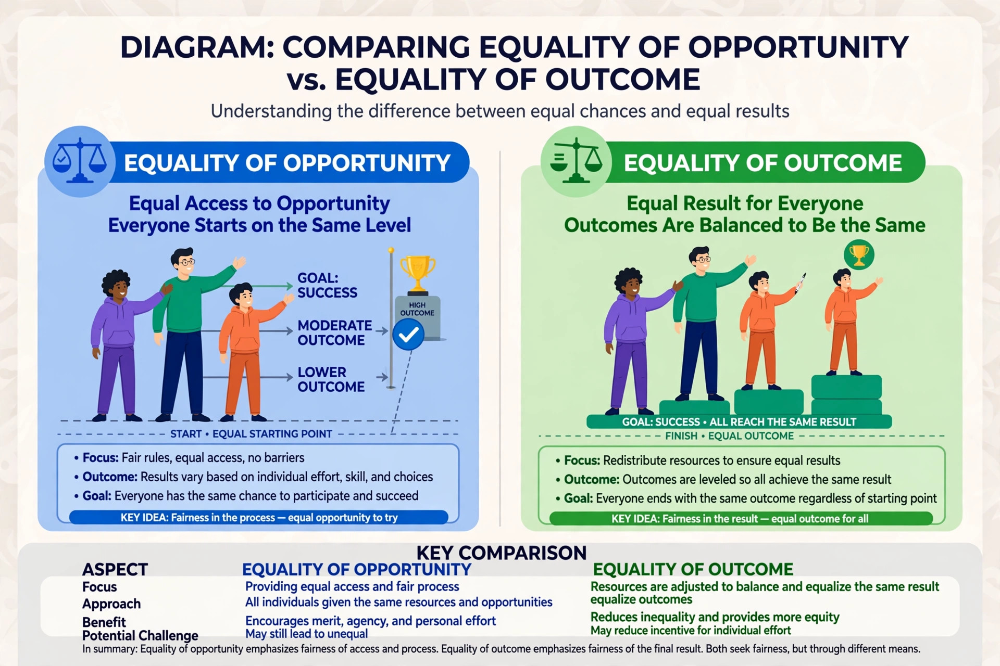

Equality of outcome, equality of condition, or equality of results is a political concept describing a state in which people have approximately the same material wealth or in which the general economic conditions of everyone's lives are alike.

Achieving equality of outcome generally requires reducing or eliminating material differences between households — for example, through progressive taxation, welfare provision, public services, and redistribution. It is contrasted with equality of opportunity, which seeks a level starting point while accepting unequal results.
Supporters argue that formal opportunity is hollow where starting resources are radically unequal, and that outcome measures reveal structural disadvantage. Critics argue that enforcing equal outcomes conflicts with liberty and incentives, a critique associated with writers such as Milton Friedman and Robert Nozick, who contrasted equality of outcome with freedom to choose.